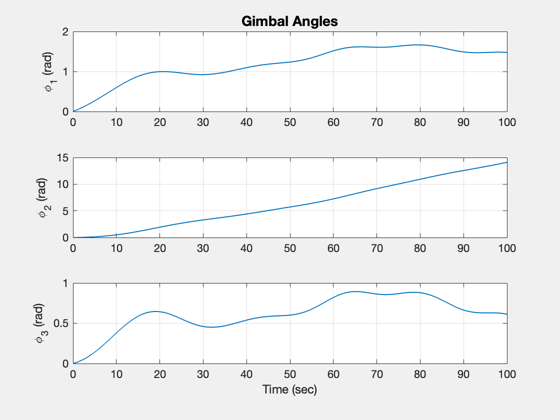
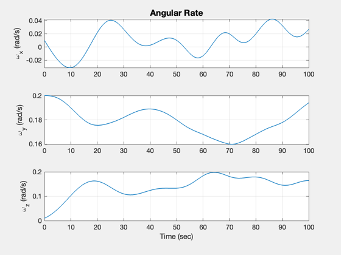
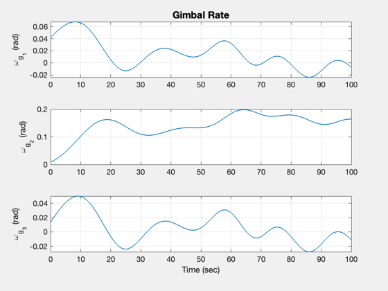
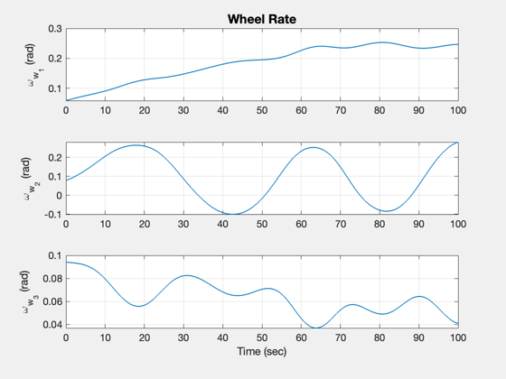
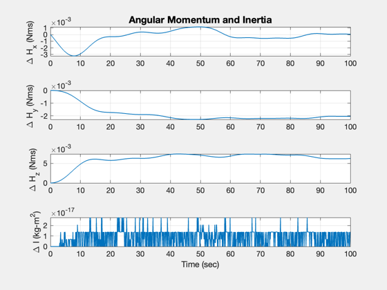
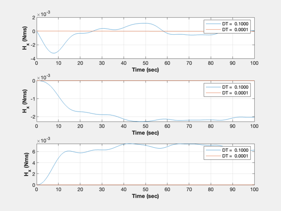

Contents
CMG demo
This tests the dynamics with 3 CMGs.
It looks at angular momentum conservation and looks for a symmetric inertia matrix
------------------------------------------------------------------------ See also: RHSCMG, StepTorque, RK4, TimeLabl, Plot2D, NewFig, Figui ------------------------------------------------------------------------
%-------------------------------------------------------------------------- % Copyright (c) 2020 Princeton Satellite Systems, Inc. % All rights reserved. %-------------------------------------------------------------------------- % Since version 2020.2 %--------------------------------------------------------------------------
User inputs
Simulation control
dT = 0.1; tEnd = 100; % Disturbance torque torque = [0;0;0]; % Core attitude states q = [1;0;0;0]; % Quaternion omega = [0.01;0.2;0.01]; % Angular rate % Wheel and gimbal rates wGW = 0.1*rand(6,1);
Initialize the simlation
x = [q;0;0;0;omega;wGW]; % Storage for plots n = ceil(tEnd/dT); xP = zeros(length(x)+4,n+1); % Get default data structure d = RHSCMG; d.fDist = @StepTorque; % Disturbance function pointer d.torqueDisturbance = torque; t = 0; % Get the initial momentum [~,~,h0] = RHSCMG(x,t,d);
Simulation loop using 4th order Runge-Kutta
for k = 1:n % Control d.torqueG = [0;0;0]; d.torqueW = [0;0;0]; % For plotting [~,inr,h] = RHSCMG(x,t,d); inrErr = max(max(abs(inr - inr'))); xP(:,k) = [x;h-h0;inrErr]; % Passes a pointer to RHSRigidBody for numerical integration x = RK4(@RHSCMG,x,dT,t,d); t = t + dT; end % Last point for plotting [~,inr,h] = RHSCMG(x,t,d); inrErr = max(max(abs(inr - inr'))); xP(:,n+1) = [x;h-h0;inrErr]; % Reduce the time step dT2 = dT/1000; % Storage for plots n2 = ceil(tEnd/dT); xP2 = zeros(3,n2+1); x = [q;0;0;0;omega;wGW];
Simulation loop using 4th order Runge-Kutta with a smaller time step
for k = 1:n2 % Control d.torqueG = [0;0;0]; d.torqueW = [0;0;0]; % For plotting [~,~,h] = RHSCMG(x,t,d); xP2(:,k) = h-h0; % Passes a pointer to RHSRigidBody for numerical integration x = RK4(@RHSCMG,x,dT2,t,d); t = t + dT2; end % Last point for plotting [~,~,h] = RHSCMG(x,t,d); xP2(:,n+1) = h-h0;
Plotting
tSec = (0:n)*dT;
[t,tL] = TimeLabl(tSec);
yL = [d.states(:)' {'\Delta H_x (Nms)'} {'\Delta H_y (Nms)'} {'\Delta H_z (Nms)'} {'\Delta I (kg-m^2)'}];
k = 5:7;
Plot2D(t,xP(k,:),tL,yL(k),'Gimbal Angles')
k = 8:10;
Plot2D(t,xP(k,:),tL,yL(k),'Angular Rate')
k = 11:13;
Plot2D(t,xP(k,:),tL,yL(k),'Gimbal Rate')
k = 14:16;
Plot2D(t,xP(k,:),tL,yL(k),'Wheel Rate')
k = 17:20;
Plot2D(t,xP(k,:),tL,yL(k),'Angular Momentum and Inertia')
k = 17:19;
tSec = (0:n2)*dT;
[t2,tL] = TimeLabl(tSec);
dTL = sprintf('DT = %7.4f',dT);
dTL2 = sprintf('DT = %7.4f',dT2);
NewFig('Angular Momentum')
subplot(3,1,1)
plot(t,xP(17,:))
hold on
plot(t2,xP2(1,:));
grid on
XLabelS(tL);
YLabelS('H_x (Nms)');
legend(dTL,dTL2);
subplot(3,1,2)
plot(t,xP(18,:))
hold on
plot(t2,xP2(2,:));
grid on
XLabelS(tL);
YLabelS('H_x (Nms)');
legend(dTL,dTL2);
subplot(3,1,3)
plot(t,xP(19,:))
hold on
plot(t2,xP2(3,:));
grid on
XLabelS(tL);
YLabelS('H_x (Nms)');
legend(dTL,dTL2);
Figui
%--------------------------------------
% $Id: 2593089400c27cdccd95ee9735d3cde2b5533dbf $
     